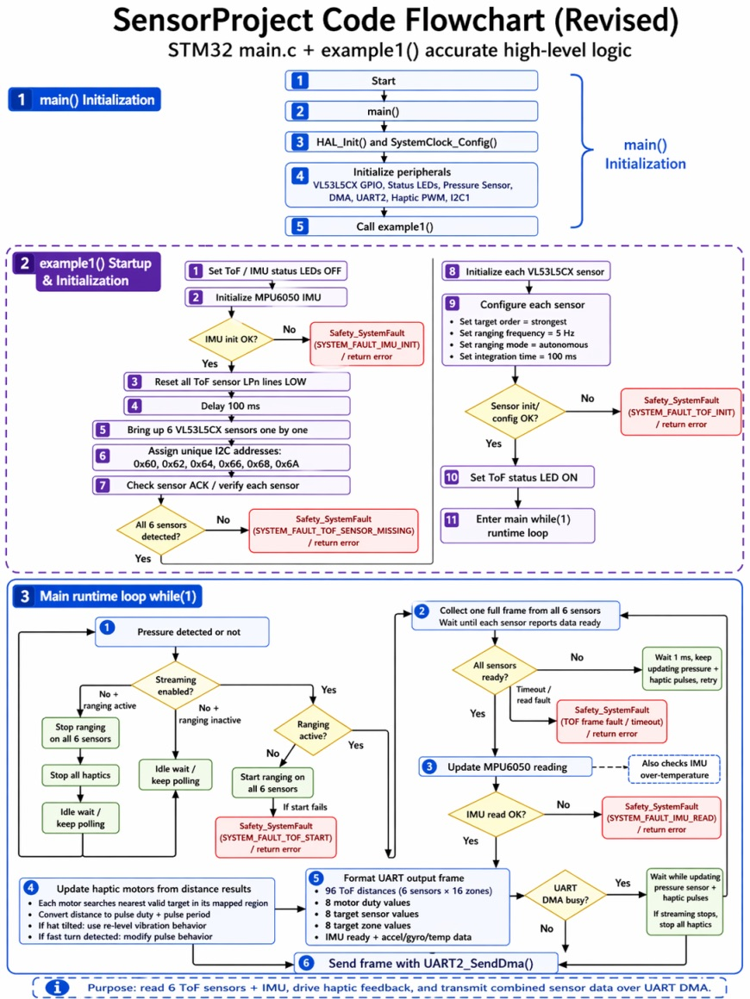

Software Design
GitHub Source Code
The embedded firmware was structured using a finite state machine (FSM) that manages the full sensor to haptic feedback pipeline. The systems boots into a low-power idle state, and only activates when the FSR sensors detect the hat being worn, reducing battery consumption during periods of no use. The system also include LED lights for debugging purposes, as well as additional sensors to best utilize the 3D map created by the ToF sensors.
 Open diagram
Open diagram
GUI Visualization
The desktop GUI displays the Sense Hat sensor data as a live spatial map, helping us see how the ToF sensors detect nearby obstacles around the wearer. Incoming distance readings are plotted around the hat model so the team can quickly understand which direction an obstacle is coming from.
This interface was used during testing to verify sensor coverage, pressure detection, orientation behavior, and motor-response logic. By watching the GUI while moving objects around the prototype, we could diagnose sensing issues and confirm that the software was translating obstacle locations into the correct haptic feedback zones.
This system was designed with several safety measures to ensure reliable and user-safe operation. At the end of each control loop, all GPIO outputs are reset to their default state (logic low). This guarantees that if any pin is incorrectly configured or an error occurs, the system will default to zero output, preventing unintended vibration. Additionally, a timer mechanism is integrated to allow the system to reset if it becomes stuck in a loop, improving robustness and fault recovery. The system is also implemented using a finite state machine (FSM), ensuring that all operations follow a well-defined and logical sequence of states. For user safety and control, the system includes a pressure-based mechanism inside the hat. If the user removes the hat (i.e., pressure is released), the system immediately resets from any current state, allowing the user to stop the device at any time.

Open diagram